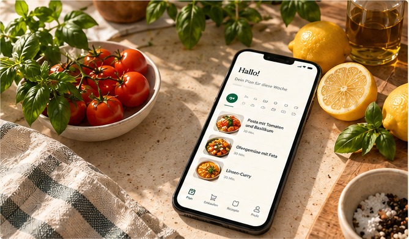
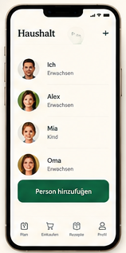
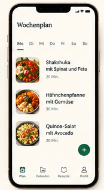
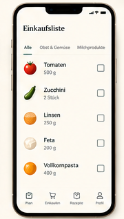

Deine Woche geplant.
Dein Einkauf gleich mit.
Plane deine Mahlzeiten für die Woche. SmartBasket berechnet die passenden Mengen, berücksichtigt deine Vorräte und erstellt deine Einkaufsliste – egal, ob du für dich allein oder für deine Familie planst.
Android-Beta · Kostenlos testen · Derzeit auf Englisch
Weniger planen. Mehr Zeit für deinen Alltag.
Ausgewogen essen
Ob allein, zu zweit oder mit Familie: SmartBasket berücksichtigt unterschiedliche Portionen, Ernährungspräferenzen und gemeinsame Mahlzeiten.
Zeit sparen
Plane deine Mahlzeiten für die Woche, tausche Gerichte aus und passe deinen Plan jederzeit an.
Clever einkaufen
SmartBasket fasst alle Zutaten zusammen, berechnet die benötigten Mengen und berücksichtigt, was du bereits zu Hause hast.
Ein Plan für euren echten Familienalltag.
Probier es mit Anna, Alex und Mia aus. Ändere, wer mitisst, und sieh direkt, wie sich Mengen und Einkauf anpassen.
Interaktives Beispiel · Haushalt, Vorrat und Preise sind Beispieldaten.Einkaufsliste für Montag und Dienstag
SmartBasket fasst die Zutaten eurer Gerichte zusammen und berücksichtigt eingetragenen Vorrat. Auf der Einkaufsliste stehen die Packungen, die noch gebraucht werden.
Beispielpreise. Der tatsächliche Betrag hängt von Produkten, Geschäft und aktuellen Preisen ab.
Dein Budget fließt in die Vorschläge ein. Vor dem Einkauf siehst du den geschätzten Betrag für die benötigten Packungen.
Abhaken ändert nur den Einkaufsstatus. Es verbucht keinen Kauf und ändert keinen Vorrat.
In drei Schritten zu deiner entspannten Woche.
Drei Schritte von deiner Essensplanung bis zur fertigen Einkaufsliste.

HaushaltSag uns, für wen du planst
Lege dein Profil an, füge bei Bedarf weitere Personen hinzu und hinterlege eure Ernährungspräferenzen.

WochenplanPlane deine Mahlzeiten
Wähle passende Gerichte aus und stelle deinen Wochenplan zusammen. Du entscheidest, was wann auf den Tisch kommt.

EinkaufslisteEinkaufsliste fertig!
SmartBasket berechnet die Zutatenmengen, berücksichtigt deine Vorräte und erstellt daraus eine übersichtliche Einkaufsliste.
Konzeptansichten. Die Oberfläche der Android-Beta kann abweichen.
Ein Essensplan, der sich nach dir richtet.
Nicht jeder isst dasselbe. Nicht jeder ist immer zu Hause. Und manchmal ändert sich der Plan spontan. SmartBasket hilft dir, deine Mahlzeiten flexibel zu organisieren.
Individuelle Portionen
Berücksichtige unterschiedliche Portionsgrößen für Erwachsene und Kinder.
Ernährungspräferenzen
Plane Mahlzeiten passend zu euren Vorlieben und Unverträglichkeiten.
Vorräte berücksichtigen
Trage ein, was bereits vorhanden ist, damit es nicht erneut auf deiner Einkaufsliste landet.
Flexibler Wochenplan
Passe Gerichte und Mahlzeiten an, wenn sich eure Pläne ändern.
Häufige Fragen
Ist SmartBasket kostenlos?
SmartBasket kann derzeit im Rahmen der Android-Beta kostenlos getestet werden. Informationen zu möglichen zukünftigen Preisen werden rechtzeitig bekannt gegeben.
Kann ich SmartBasket auch alleine nutzen?
Ja. Du kannst Mahlzeiten und Einkäufe für dich allein, zu zweit oder für einen größeren Haushalt planen.
Berücksichtigt SmartBasket Unverträglichkeiten?
Du kannst Ernährungspräferenzen und Unverträglichkeiten im Profil hinterlegen. Prüfe die Zutaten und Produktangaben trotzdem immer selbst, insbesondere bei Allergien.
Kann ich vorhandene Lebensmittel berücksichtigen?
Ja. Du kannst vorhandene Lebensmittel eintragen, damit SmartBasket sie bei der Einkaufsplanung berücksichtigt.
Wie berechnet SmartBasket die Mengen?
SmartBasket berechnet die benötigten Zutaten anhand der ausgewählten Gerichte und der geplanten Portionen. Die Mengen kannst du bei Bedarf anpassen.
Kann ich Lebensmittel direkt bestellen?
Noch nicht. SmartBasket erstellt derzeit eine Einkaufsliste, mit der du deinen Einkauf selbst erledigen kannst.
Gibt es SmartBasket für iPhone?
Aktuell befindet sich SmartBasket in der Android-Testphase. Eine iPhone-Version ist derzeit nicht verfügbar.
Wie bekomme ich Zugang zur Beta?
Fordere über das Formular deinen Beta-Zugang an. Nach Aufnahme in die Testliste erhältst du die Informationen zum Google-Play-Test per E-Mail.
Was passiert mit meinen Daten?
Informationen zur Verarbeitung deiner Daten findest du in unserer Datenschutzerklärung.
Bereit für einen einfacheren Wocheneinkauf?
Plane deine Mahlzeiten, behalte deine Vorräte im Blick und erledige deinen Einkauf mit einer fertigen Liste.
Kostenlosen Beta-Zugang anfragenSmartBasket befindet sich in der Android-Testphase und ist derzeit auf Englisch verfügbar.